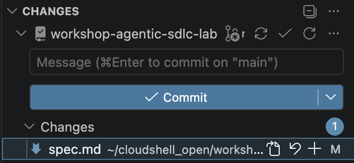
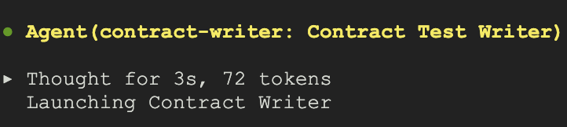
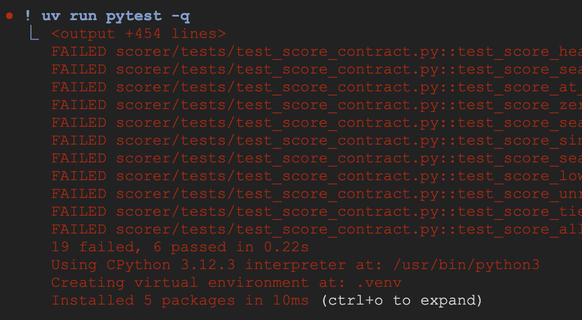
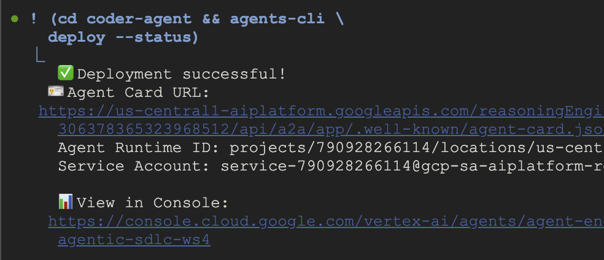

You are going to take a request written the way requests actually arrive: prose, from a stakeholder, with the important parts unsaid, and get working code out of the other end. A coding agent writes the code. You never do.
The interesting part is not the agent. It is what you have to make true before an agent can be useful: a specification precise enough that two parties could build from it independently and their code would fit.
gh logged inOpen this in Cloud Shell and the guide comes with you, in a panel beside the terminal you are typing into:
That clones the lab repository. You fork it in the next step, from inside that same clone.
Update agy. It lives on the VM rather than in $HOME, so a new session may have an older one. No harm if you are already current.
sudo agy update && agy --version
Check your agy login:
agy -p "Reply with exactly: authenticated"
If it asks you to open a URL instead of answering, the grant has lapsed. Log in again with Authenticate agy from the setup guide, then come back.
Point gcloud at it. A new session has no project set, and every gcloud command below needs one:
gcloud config set project YOUR_PROJECT_ID
gcloud config get-value project
Set your two locations. A new shell has neither. MODEL_LOCATION is fixed by the model: the Gemini 3 family answers only from global. Your engine region is whatever you chose during setup, and the project remembers it, because Terraform replicated the secret into that region:
export MODEL_LOCATION=global
export AGENT_ENGINE_LOCATION=$(gcloud secrets describe agentic-sdlc-deploy-key \
--format='value(replication.userManaged.replicas[0].location)')
echo "$MODEL_LOCATION / $AGENT_ENGINE_LOCATION"
Then check your GitHub login survived, which it should have:
gh auth status
gcloud secrets describe agentic-sdlc-deploy-key --format='value(name)'
It should print the secret's resource name. That secret is empty. Preflight created the container, and you will put a key in it later today.
The application lives in its own repository. You fork it, because the agent will push to your copy and you will merge its work.
gh repo fork alanblythe/workshop-agentic-sdlc-lab --clone --remote
cd workshop-agentic-sdlc-lab
gh repo set-default "$(git remote get-url origin)"
gh repo edit --enable-issues
origin now points at your fork and upstream at the original.
The second line is not housekeeping. Forking sets gh's default repository to upstream, so without it the issue you file lands on the workshop's copy rather than yours, and nothing tells you. The third turns issues on, which GitHub disables on every new fork, and which you find out about two steps from here when you try to file one.
gh repo view --json nameWithOwner,isFork,hasIssuesEnabled \
--jq '.nameWithOwner + " fork=" + (.isFork|tostring) + " issues=" + (.hasIssuesEnabled|tostring)'
The owner should be you, with fork=true and issues=true.
The agent takes several minutes to build and deploy. Start it now and do the thinking while it works. Waiting at a progress bar teaches nothing.
(cd coder-agent && agents-cli deploy \
--project "$(gcloud config get-value project)" \
--region "$AGENT_ENGINE_LOCATION" \
--agent-identity \
--update-env-vars GOOGLE_CLOUD_AGENT_ENGINE_ENABLE_TELEMETRY=true,MODEL_LOCATION=global \
--no-wait)
--no-wait returns as soon as the build is submitted. --agent-identity is the part that matters most: it gives the deployment a federated identity of its own rather than borrowing a service account, which is how it will read a secret you have not given it yet.
(cd coder-agent && agents-cli deploy --status)
It reports the deployment as in progress. You are not waiting for it. The next four steps happen while it builds.
docs/request.md is the request as it arrived. It is short, and it is the only statement of what anyone actually wants.
cat docs/request.md
File it, so the work has a number. The agent's commits will reference it and merging its branch will close it, which is what the number is for:
gh issue create --title "Account health scoring" --body-file docs/request.md
Someone else has already turned it into a spec. Read docs/spec.md as though you had to implement it this afternoon.
cat docs/spec.md
It already conforms to docs/spec-template.md, the shape a spec has to have here before anyone writes code. Every required section is present, Open questions says none, and it is nowhere near buildable. Sections are cheap. The gate at the end of that template is the part that costs something.
As you read, keep one question in mind, and only this one:
Could two people build from this independently, without talking, and would their code fit together?
Anything that passes is precise enough. Anything that does not is a decision nobody has made yet.
Think about two things in the spec you could implement in more than one way, and that a reviewer would probably wave through. You will find out shortly whether they are the ones that matter.
The interrogator is a skill called spec-adversary, and it ships in this repository at .agents/skills/spec-adversary/SKILL.md, which means it is in your fork and it needs no installing. A workspace skill is found relative to where agy starts, so start it from the root of the clone:
cd ~/cloudshell_open/workshop-agentic-sdlc-lab
agy --mode accept-edits
Then ask it to go to work:
Use the spec-adversary skill on docs/spec.md. The sample data is
fixtures/usage.csv. One ambiguity at a time.
Before you answer its first question, open .agents/skills/spec-adversary/SKILL.md and read it. It is 150 lines and it is the whole method: sweep the spec before asking anything, one question at a time, and never recommend a reading. Every refusal you are about to meet is written down in there, which is the difference between an agent behaving oddly and an agent behaving as specified.
It is in your fork, so it is yours to change. That is the last step of the workshop, and the reason the file is here rather than somewhere central.
It puts one ambiguity in front of you at a time: the passage, the two readings, and the case where they disagree. Arrow keys move, enter chooses. There is a write-in option for when neither reading is what you meant. It writes your decision into docs/spec.md and moves to the next one.
The sample data it asks about is fixtures/usage.csv.
Keep going until it stops finding anything consequential. That usually takes longer than people expect, and the questions get better as they get smaller.
Open the Source Control view in the editor and click spec.md to see what changed.

The gate, and you can check it yourself:
Status is ApprovedOpen questions is emptyDecisions has a row per question you answered, each naming the case that would have differedEvery hunk in that diff should be one of those three. A hunk that is a rewording is the adversary editing your spec, which it is not allowed to do.
Decisions in prose are still prose. Now turn them into tests, which is the form an agent can be held to.
Still in agy:
Use the contract-writer agent to write contract tests into scorer/tests/ from
the resolved docs/spec.md, and the seam they call into scorer/usage.py. Cover
the parsing rules and the scoring rules separately. Every function body in
scorer/usage.py raises NotImplementedError and nothing else. Cite the decision
id on every assertion that came from one.
The adversary does not write them. It hands the job to a subagent called contract-writer, which you will see spawn: a second persona whose only work is turning resolved decisions into assertions, and which is not allowed to decide anything. If it reports an assertion it could not derive, that is an ambiguity the interrogation missed, and the adversary reopens it rather than letting a guess into a test.

Its definition is .agents/agents/contract-writer/agent.md, in your fork beside the skill.
These tests are the contract. They are what "done" means, and they are the only thing standing between you and an agent that writes plausible code which does the wrong thing.
Stay in agy for these. Type ! first, then the command: the shell runs the rest of the line, so you can check the agent's work without losing the session that did it. Type the ! rather than pasting it, which agy warns about.
First, that the files exist:
git status --short scorer/
Three tests and the seam. If the subagent reported writing them and this prints nothing, it did not write them: what an agent says it did and what is on disk are two different claims, and only one of them is checkable.
uv run pytest -q

Failures, not errors. The contract tests fail, because nothing implements the seam yet, and the starter tests pass. A suite that ran, a contract that is red, a baseline that is green.
That is what the seam bought. A test that cannot be imported has not run, and a test that has not run holds nobody to anything.
Your agent should be up by now. Still in agy, so each of these still goes after a typed !.
(cd coder-agent && agents-cli deploy --status)

(cd coder-agent && agents-cli deploy --list)
Confirm it is running under its own identity rather than a borrowed service account. There is no gcloud surface for this, so scripts/agent-identity.sh asks the API directly:
bash scripts/agent-identity.sh
effectiveIdentity is a long federated principal containing system.id.goog, ending in your engine's id. That principal, and not any service account, is what the next step grants access to.
The agent has to push. It needs a credential, and it needs one that cannot do anything else.
bash scripts/setup-deploy-key.sh
scripts/setup-deploy-key.sh is what does it.
That generates an SSH key, gives it write access to this repository only, proves it works, and puts the private half in the Secret Manager secret preflight made. Nothing is left on your machine.
The script ends by printing the secret the agent reads and the repository it can push to. It also refuses to finish unless a real clone and a real push succeeded, so reaching the end is the verification.
Commit the contract and send the work.
git add -A && git commit -m "The contract: the resolved spec and the tests it implies" && git push
bash scripts/dispatch.sh --issue 1
scripts/dispatch.sh is what pins the commit and follows the branch.
The dispatch pins the exact commit you just pushed. The agent fetches that commit and nothing else.
--issue is the number you filed earlier, which is 1 on a fork whose issues you had just turned on. Run gh issue list if yours is not. The agent writes it into every commit it pushes, and dispatch refuses a number that is not an open issue rather than let a wrong one reach the commits.
The script follows your branch and prints each commit as it lands. Closing it does not stop the agent.
You should see the agent's branch appear and at least one commit arrive on it. The run ends with the branch name and how to merge it.
Do not merge yet. Read.
git fetch origin && git log --oneline origin/agent/parse
git diff main...origin/agent/parse
Then check it against the contract rather than against your impression of it:
git checkout -b review origin/agent/parse && uv run pytest -q
You can also watch the whole trajectory, every file it read and every command it ran, in the console, because each step was recorded as an event in the agent's session.
The tests pass, and the diff touches the implementation only. If the agent edited a test to make it pass, you have learned something about how contracts need to be written.
Merge when you are satisfied, and push:
git checkout main && git merge origin/agent/parse && git push
The push is what closes your issue. The agent wrote Closes #1 into its commit messages, and GitHub acts on that when those commits land on your default branch, not when they land on a branch.
The agent costs money while it is deployed. Remove it, and the credential with it.
One command removes everything the day created:
bash scripts/teardown.sh
scripts/teardown.sh shows you what it is about to remove and asks before doing it. Use --dry-run first if you would rather look than trust.
It deletes three things: the deployed agent, the Secret Manager secret, and the deploy key on your fork. Your branches and the agent's commits are left alone, and so are the APIs. Your project may well have been using them before today.
You took prose from a stakeholder and produced merged, tested code without writing any of it. The agent was the least interesting part: it did what the contract said, because by then the contract said something.
The work that mattered was refusing to let the ambiguity through, and the reason the agent could be trusted with the rest is that you had made "done" checkable before you asked anyone, human or otherwise, to do it.
bash scripts/teardown.sh
Run a second time it reports Already torn down and changes nothing. That is the check: it is safe to re-run, so there is no doubt about whether it finished.